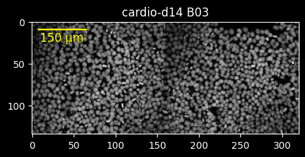
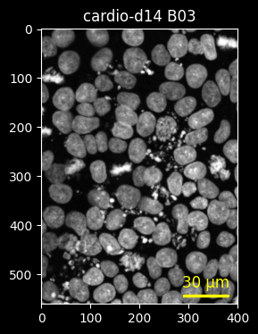
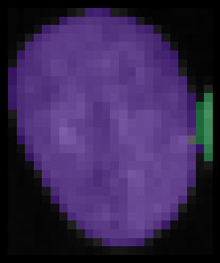

Using ez_zarr to explore Fractal outputs
Silvia Barbiero, Michael Stadler
Disclaimer
The hcs_wrappers module described here is only provided for legacy
reasons and not being further developed. For new projects, we recommend
to use the ome_zarr module instead (see getting started with
individual
images).
Goal
The aim of ez_zarr is to provide easy, high-level access to high
content screening microscopy data, stored as OME-Zarr filesets according
to the NGFF specifications
with additional metadata fields, for example the ones generated by the
Fractal platform.
The goal is that users can write simple scripts working with plates, wells and fields of view, without having to understand how these are represented within an OME-Zarr fileset.
Installation
ez_zarr is hosted on GitHub at
github.com/fmicompbio/ez_zarr
and the documentation can be found at
fmicompbio.github.io/ez_zarr.
The release version of ez_zarr can be installed using:
The current (development) version of ez_zarr can be installed from
github.com using:
Quickstart
Note: If you prefer to run these examples interactively, you can also download them as an ipynb notebook.
Here are some examples of how you can use ez_zarr:
Download example data
To run the code below, you will first need to download some Fractal output data. You can do this for example by running the following from a terminal:
# Download small Fractal output from Zenodo
curl -o temp.zip https://zenodo.org/records/10519143/files/20200812-CardiomyocyteDifferentiation14-Cycle1_mip.zarr.zip
# Unzip and remove the temporary zip file
unzip temp.zip
rm temp.zip
or directly from within a python notebook or session using:
import requests
import zipfile
import os
# for info on data see: https://zenodo.org/records/10257149
url = 'https://zenodo.org/records/10519143/files/20200812-CardiomyocyteDifferentiation14-Cycle1_mip.zarr.zip'
# download
response = requests.get(url)
with open('temp.zip', 'wb') as temp_zip:
temp_zip.write(response.content)
# unzip to current directory
with zipfile.ZipFile('temp.zip', 'r') as zip_ref:
zip_ref.extractall('.')
# clean up
os.remove('temp.zip')
Load packages
import matplotlib.pyplot as plt
from matplotlib.colors import ListedColormap
import numpy as np
from skimage import color
from ez_zarr import hcs_wrappers, plotting
Open OME-Zarr file set
We open a single OME-Zarr directory, typically representing a single plate:
zarr_directory = '20200812-CardiomyocyteDifferentiation14-Cycle1_mip.zarr'
plate = hcs_wrappers.FractalZarr(zarr_directory, name = 'cardio-d14')
plate
FractalZarr cardio-d14
path: 20200812-CardiomyocyteDifferentiation14-Cycle1_mip.zarr
n_wells: 1
n_channels: 1 (DAPI)
n_pyramid_levels: 5
pyramid_zyx_scalefactor: {'0': array([1., 2., 2.])}
full_resolution_zyx_spacing (µm): [1.0, 0.1625, 0.1625]
segmentations: nuclei, empty
tables (measurements): FOV_ROI_table, well_ROI_table, nuclei_ROI_table, nuclei, expected_table_well_ROI_table_False_0_0, expected_table_well_ROI_table_True_0_0, expected_table_FOV_ROI_table_False_0_0, expected_table_FOV_ROI_table_True_0_0, expected_table_well_ROI_table_0_True_0_0, expected_table_masked_nuclei_ROI_table_0_True_0_0, expected_table_masked_nuclei_ROI_table_1_True_0_0
plate represents a maximum intensity projection of an acquisition with
1 well and 1 channel.
There are 5 pyramid_levels available (0 to 4), meaning that in
addition to the full resolution data (level 0), we have four more levels
that provide the data in 2-fold lower resolutions (see
pyramid_zyx_scalefactor), for example for faster plotting.
This OME-Zarr fileset also contains a segmentation (nuclei), for which
measurements have been extracted and saved in the table nuclei. In
addition, there are some further tables, such as FOV_ROI_table, which
contains the coordinates of the fields of view, or nuclei_ROI_table,
which contains the bounding box coordinates for the segmented nuclei.
Get information from plate
You can obtain information on the content available in the fileset:
'20200812-CardiomyocyteDifferentiation14-Cycle1_mip.zarr'
[{'color': '00FFFF',
'label': 'DAPI',
'wavelength_id': 'A01_C01',
'window': {'end': 800, 'max': 65535, 'min': 0, 'start': 110}}]
['B03']
['nuclei', 'empty']
['FOV_ROI_table',
'well_ROI_table',
'nuclei_ROI_table',
'nuclei',
'expected_table_well_ROI_table_False_0_0',
'expected_table_well_ROI_table_True_0_0',
'expected_table_FOV_ROI_table_False_0_0',
'expected_table_FOV_ROI_table_True_0_0',
'expected_table_well_ROI_table_0_True_0_0',
'expected_table_masked_nuclei_ROI_table_0_True_0_0',
'expected_table_masked_nuclei_ROI_table_1_True_0_0']
# zyx pixel spacing in micrometers for pyramid levels
# ... for images
plate.level_zyx_spacing_images
{'0': [[1.0, 0.1625, 0.1625],
[1.0, 0.325, 0.325],
[1.0, 0.65, 0.65],
[1.0, 1.3, 1.3],
[1.0, 2.6, 2.6]]}
{'nuclei': [[1.0, 0.65, 0.65],
[1.0, 1.3, 1.3],
[1.0, 2.6, 2.6],
[1.0, 5.2, 5.2],
[1.0, 10.4, 10.4]],
'empty': [[1.0, 0.65, 0.65],
[1.0, 1.3, 1.3],
[1.0, 2.6, 2.6],
[1.0, 5.2, 5.2],
[1.0, 10.4, 10.4]]}
Extract a table from the OME-Zarr fileset
The tables are stored within the fileset as described in the Fractal documentation.
As mentioned the goal of ez_zarr is to abstract the internal structure
and make it simple to obtain these tables, if necessary accumulated over
many wells, as a pandas.DataFrame :
| FieldIndex | well | x_micrometer | y_micrometer | z_micrometer | len_x_micrometer | len_y_micrometer | len_z_micrometer | x_micrometer_original | y_micrometer_original |
|---|---|---|---|---|---|---|---|---|---|
| FOV_1 | B03 | 0 | 0 | 0 | 416 | 351 | 1 | -1448.3 | -1517.7 |
| FOV_2 | B03 | 416 | 0 | 0 | 416 | 351 | 1 | -1032.3 | -1517.7 |
or anndata.AnnData object:
AnnData object with n_obs × n_vars = 2 × 8
obs: 'well'
Get an overview of a full well
get_image_ROI() extracts a rectangular region of interest (ROI) from a
well image by coordinates. If no coordinates or other arguments are
given, it returns the whole well at the lowest available resolution:
my_well = plate.get_wells(simplify=True)[0]
print(my_well)
img = plate.get_image_ROI()
print(img.shape) # (ch, z, y, x)
B03
(1, 1, 135, 320)
Such an image array can be easily plotted using
matplotlib.pyplot.imshow:
with plt.style.context('dark_background'):
fig = plt.figure(figsize=(4, 4))
fig.set_dpi(100)
plt.imshow(img[0,0], cmap='gray', vmin=100, vmax=600)
plt.title(plate.name + ' ' + my_well)
plt.show()
plt.close()
With plot_well(), ez_zarr provides a convenient function for this
use case that automatically extracts the well image and plots it.
Because it has access to the image metadata, it can also add for example
a scale bar:
plate.plot_well(well=my_well,
channels=[0],
channel_colors=['white'],
channel_ranges=[[100, 600]],
title=plate.name + ' ' + my_well,
scalebar_micrometer=150,
scalebar_color='yellow',
scalebar_position='topleft',
scalebar_label=True,
fig_width_inch=5,
fig_height_inch=4,
fig_dpi=100)

plot_well() and also plot_plate() use internally
ez_zarr.plotting.plot_image() which is a convenient wrapper around
matplotlib.pyplot.imshow. plot_image() can also be used directly if
you want to work with image arrays (for examples, see section “Working
with segmentation masks” below).
Get salient regions at higher resolution
get_image_grid_ROIs() allows you to split the well image into a
rectangular grid of num_x-by-num_y regions, and automatically select
the num_select top regions based on a given property
(sample_method).
Here, we pick three regions with the highest signal in channel zero (DAPI):
coord_list, img_list = plate.get_image_grid_ROIs(well = my_well,
pyramid_level=1,
num_x=10, num_y=5, num_select=3,
sample_method='sum',
channel=0)
print(coord_list) # list of (y_start, y_end, x_start, x_end)
print(len(img_list))
with plt.style.context('dark_background'):
fig = plt.figure(figsize=(9,3))
fig.set_dpi(100)
for i in range(len(img_list)):
plt.subplot(1, 3, i + 1)
plt.imshow(img_list[i][0,0], cmap='gray', vmin=100, vmax=600)
plt.axis('off')
plt.title(my_well + ' ' + str(coord_list[i]))
plt.show()
plt.close()
[(216, 432, 768, 1024), (432, 648, 2048, 2304), (432, 648, 768, 1024)]
3
Zoom in
Alternatively, we can zoom in by coordinates:
img = plate.get_image_ROI(well=my_well,
upper_left_yx=(50, 40),
lower_right_yx=(120, 90))
print(img.shape)
with plt.style.context('dark_background'):
fig = plt.figure(figsize=(4, 4))
fig.set_dpi(100)
plt.imshow(img[0,0], cmap='gray', vmin=100, vmax=600)
plt.title(plate.name + ' B03')
plt.show()
plt.close()
(1, 1, 71, 51)
So far, we have been automatically using the lowest resolution (highest) pyramid level version of the data, and the pixel coordinates above refer to that space.
If we want to get the same image region at a higher resolution (for
example pyramid_level=1), we need to adjust these coordinates. For
this, we have two options:
- Convert the coordinates manually using the
convert_pixel_to_pixel()function. We then use these new coordinates withget_image_ROI()to extract the same region from the higher resolution pyramid level:
# convert coordinates manually from lowest-resolution (None, here: 4)
# to a higher resolution (1) pyramid level
# remark: coordinates are (z,y,x)
new_upper_left = plate.convert_pixel_to_pixel(zyx = (0, 50, 40),
pyramid_level_from = None,
pyramid_level_to=1)
new_lower_right = plate.convert_pixel_to_pixel(zyx = (0, 120, 90),
pyramid_level_from = None,
pyramid_level_to=1)
# extract image
img = plate.get_image_ROI(well=my_well,
upper_left_yx=new_upper_left[1:],
lower_right_yx=new_lower_right[1:],
pyramid_level=1)
with plt.style.context('dark_background'):
fig = plt.figure(figsize=(4, 4))
fig.set_dpi(100)
plt.imshow(img[0,0], cmap='gray', vmin=100, vmax=600)
plt.title(plate.name + ' ' + my_well)
plt.show()
plt.close()
- Convert the coordinates automatically inside
plot_well(). The functionplot_well()is flexible and can also plot just a sub-region of a well, defined by coordinates. The parameterpyramid_level_coordcan be used to define the reference pyramid level that these coordinates refer to. This can be a different pyramid level than the one from which the image is extracted (defined bypyramid_level):
plate.plot_well(well=my_well,
pyramid_level=1, # extract image from this level
pyramid_level_coord=4, # coordinates refer to this level
upper_left_yx=(50,40),
lower_right_yx=(120,90),
channels=[0],
channel_colors=['white'],
channel_ranges=[[100, 600]],
title=plate.name + ' ' + my_well,
scalebar_micrometer=30,
scalebar_color='yellow',
scalebar_position='bottomright',
scalebar_label=True,
fig_width_inch=4,
fig_height_inch=4,
fig_dpi=100)

Coordinate conversions
As mentioned the pixel coordinates depend on the pyramid_level. The
image metadata makes it easy to convert between pixel coordinates and
micrometer coordinates, or pixel coordinates referring to different
pyramid levels:
zyx = (1, 230, 180) # highest pyramid level (4)
print('starting coordinates (pyramid_level=4): ' + str(zyx))
# convert from pixel to micrometers
zyx_um = plate.convert_pixel_to_micrometer(zyx, pyramid_level=4)
print('in micrometer: ' + str(zyx_um))
# convert from micrometers to pixels
zyx_px = plate.convert_micrometer_to_pixel(zyx_um, pyramid_level=4)
print('back in pixel: ' + str(zyx_px))
# convert pixels between pyramid levels
zyx_px_0 = plate.convert_pixel_to_pixel(zyx_px, pyramid_level_from=4, pyramid_level_to=0)
print('in pixel (pyramid_level=0): ' + str(zyx_px_0))
starting coordinates (pyramid_level=4): (1, 230, 180)
in micrometer: (1.0, 598.0, 468.0)
back in pixel: (1, 230, 180)
in pixel (pyramid_level=0): (1, 3680, 2880)
These functions are also used by plot_well() internally to add a scale
bar to the image plot, as we have seen above.
Working with segmentation masks
When segmentation masks (labels) are available, we can also extract them. For example, we can plot the labels with transparency on top of the image:
# select which object to plot
label = 'nuclei'
img_pl = 2 # image pyramid level
# find corresponding mask pyramid level
img_name = plate.image_names[0]
pl_match = [plate.level_zyx_spacing_images[img_name][img_pl] == x for x in plate.level_zyx_spacing_labels[label]]
assert sum(pl_match) == 1
msk_pl = pl_match.index(True)
# load image and corresponding mask
img = plate.get_image_ROI(well=my_well, pyramid_level=img_pl,
upper_left_yx=(200, 160), lower_right_yx=(480, 360))
msk = plate.get_label_ROI(label_name=label, well=my_well, pyramid_level=msk_pl,
upper_left_yx=(200, 160), lower_right_yx=(480, 360))
assert img[0].shape == msk.shape
# plot image and mask
plotting.plot_image(im=img, msk=msk, msk_alpha=0.3,
channels=[0], channel_colors=['white'], channel_ranges=[[100,600]],
fig_width_inch=6, fig_height_inch=6, fig_dpi=100)
Using the tables, we can get the bounding box coordinates in micrometers
from nuclei_ROI_table (here just showing the rows 100 to 110):
| well | x_micrometer | y_micrometer | z_micrometer | len_x_micrometer | len_y_micrometer | len_z_micrometer | |
|---|---|---|---|---|---|---|---|
| 0 | B03 | 105.95 | 0 | 0 | 8.45 | 5.2 | 1 |
| 1 | B03 | 121.55 | 0 | 0 | 11.05 | 7.15 | 1 |
| 2 | B03 | 141.7 | 0 | 0 | 13.65 | 5.2 | 1 |
| 3 | B03 | 180.7 | 0 | 0 | 13 | 13 | 1 |
| 4 | B03 | 196.95 | 0 | 0 | 7.15 | 1.3 | 1 |
| 5 | B03 | 209.3 | 0 | 0 | 9.75 | 3.9 | 1 |
| 6 | B03 | 230.75 | 0 | 0 | 11.7 | 11.7 | 1 |
| 7 | B03 | 242.45 | 0 | 0 | 9.75 | 15.6 | 1 |
| 8 | B03 | 276.25 | 0 | 0 | 16.9 | 9.1 | 1 |
| 9 | B03 | 300.95 | 0 | 0 | 12.35 | 4.55 | 1 |
We can plot the image region corresponding to a single segmented object, for example the nucleus at index 106:
# select which object to plot
idx = 106 # index of the object in `nucl`
img_nucl = plate.get_image_table_idx(table_name='nuclei_ROI_table',
table_idx=idx,
well=my_well,
pyramid_level=img_pl,
as_NumPy=True)
msk_nucl = plate.get_label_table_idx(label_name='nuclei',
table_name='nuclei_ROI_table',
table_idx=idx,
well=my_well,
pyramid_level=msk_pl,
as_NumPy=True)
assert img_nucl.shape[1:] == msk_nucl.shape
# plot
plotting.plot_image(im=img_nucl, msk=msk_nucl, msk_alpha=0.3,
channels=[0], channel_colors=['white'], channel_ranges=[[100,600]],
fig_width_inch=4, fig_height_inch=4, fig_dpi=100)

Calculations on the image data
To save memory, images are stored on disk and only loaded when needed
(for implementation details see the dask Array
documentation).
This can be demonstrated by type(img):
dask.array.core.Array
To force loading of the data into memory, you can call .compute():
numpy.ndarray
In general, you can use dask arrays like numpy arrays. For example,
we can threshold the image:
# threshold
img_mask = img[0,0]>300
# ... and compute to numpy array
img_mask = img_mask.compute()
# plot
plotting.plot_image(im=img[:,0], msk=img_mask, msk_alpha=0.5,
fig_width_inch=6, fig_height_inch=6, fig_dpi=100)
This is of course not a recommended way to segment this image, but
rather meant to demonstrate that the dask arrays can be used just like
numpy arrays.
Session info
/opt/hostedtoolcache/Python/3.11.13/x64/lib/python3.11/site-packages/session_info/main.py:213: UserWarning: The '__version__' attribute is deprecated and will be removed in MarkupSafe 3.1. Use feature detection, or `importlib.metadata.version("markupsafe")`, instead.
mod_version = _find_version(mod.__version__)
Click to view session information
----- anndata 0.12.2 dask 2025.9.1 ez_zarr 0.4.2 matplotlib 3.8.2 numpy 1.26.4 pandas 2.3.2 requests 2.32.5 session_info 1.0.0 skimage 0.22.0 -----
Click to view modules imported as dependencies
PIL 11.3.0 anyio NA arrow 1.3.0 asttokens NA attr 25.3.0 attrs 25.3.0 babel 2.17.0 certifi 2025.08.03 charset_normalizer 3.4.3 cloudpickle 3.1.1 comm 0.2.3 crc32c NA cycler 0.12.1 cython_runtime NA dateutil 2.9.0.post0 debugpy 1.8.17 decorator 5.2.1 defusedxml 0.7.1 donfig 0.8.1.post1 executing 2.2.1 fastjsonschema NA fqdn NA fsspec 2025.9.0 h5py 3.14.0 idna 3.10 importlib_metadata NA ipykernel 6.30.1 isoduration NA jedi 0.19.2 jinja2 3.1.6 json5 0.12.1 jsonpointer 3.0.0 jsonschema 4.25.1 jsonschema_specifications NA jupyter_events 0.12.0 jupyter_server 2.17.0 jupyterlab_server 2.27.3 kiwisolver 1.4.9 lark 1.2.2 lazy_loader 0.4 legacy_api_wrap NA markupsafe 3.0.2 matplotlib_inline 0.1.7 mpl_toolkits NA natsort 8.4.0 nbformat 5.10.4 numcodecs 0.16.3 overrides NA packaging 25.0 parso 0.8.5 platformdirs 4.4.0 prometheus_client NA prompt_toolkit 3.0.52 psutil 7.1.0 pure_eval 0.2.3 pydev_ipython NA pydevconsole NA pydevd 3.2.3 pydevd_file_utils NA pydevd_plugins NA pydevd_tracing NA pygments 2.19.2 pyparsing 3.2.5 pythonjsonlogger NA pytz 2025.2 referencing NA rfc3339_validator 0.1.4 rfc3986_validator 0.1.1 rfc3987_syntax NA rpds NA scipy 1.16.2 send2trash NA six 1.17.0 sniffio 1.3.1 stack_data 0.6.3 tabulate 0.9.0 testing NA tlz 1.0.0 toolz 1.0.0 tornado 6.5.2 traitlets 5.14.3 typing_extensions NA uri_template NA urllib3 2.5.0 wcwidth 0.2.13 webcolors NA websocket 1.8.0 yaml 6.0.2 zarr 3.1.3 zipp NA zmq 27.1.0 zoneinfo NA
----- IPython 9.5.0 jupyter_client 8.6.3 jupyter_core 5.8.1 jupyterlab 4.4.7 notebook 7.4.5 ----- Python 3.11.13 (main, Jun 4 2025, 04:12:12) [GCC 13.3.0] Linux-6.11.0-1018-azure-x86_64-with-glibc2.39 ----- Session information updated at 2025-09-22 12:39